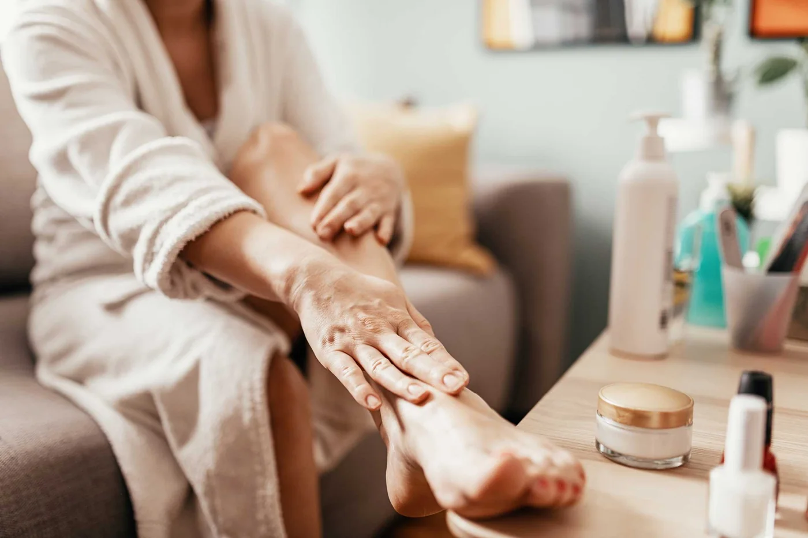
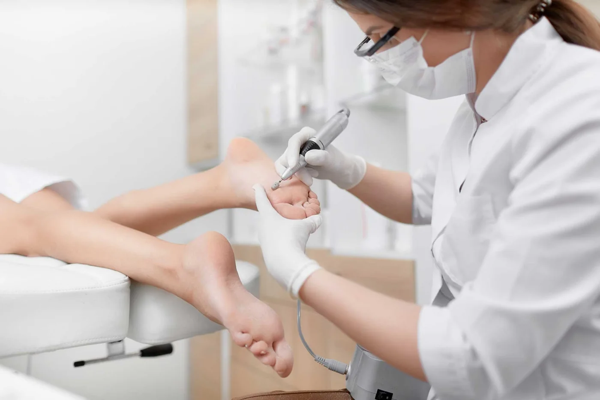
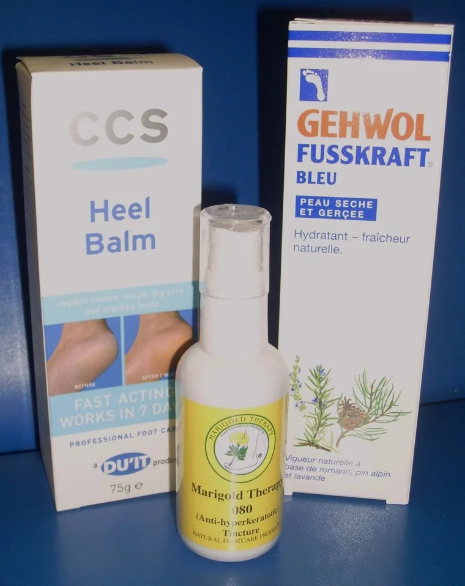

Corns & callous
Treated by paring away the dead hard skin with sterile blades and smoothing off with a drill and moisture cream. A painless procedure.
Shenley Road · Borehamwood · Hertfordshire
A local clinic-based practice treating all conditions and ailments of the feet — from routine nail care to laser therapy for stubborn fungal infections. Run by Edwina Bogush BSc, a podiatrist of nearly 30 years.

Welcome
The practice welcomes patients of all ages, with a range of treatments available including general foot care, nail clipping, laser treatment for fungal infection, verrucae treatments, simple insoles for biomechanical support, callous and corn treatment, and general foot care advice for diabetics and complex care needs.
Home visits are offered to vulnerable and housebound patients. Edwina also has extensive experience of patients with dementia and is able to deal with their sometimes unpredictable nature.
Techniques
Most of what walks through the door is straightforward and painless to fix. Here's what treatment actually involves, in plain terms.
Treated by paring away the dead hard skin with sterile blades and smoothing off with a drill and moisture cream. A painless procedure.
Treated with cryotherapy (freezing), which can be painful, or with acid creams and crystals, which usually are not. Homeopathic tincture and tablets are also available and are not painful.
Part of the nail is removed, sometimes with anaesthetic. Slightly painful, but not if the correct technique is used. If chronic, a minor operation under anaesthetic permanently removes part of the nail.
Treated with anti-fungal agents applied topically, under supervision if the infection is severe.
Thickness is reduced with a drill — a painless procedure — followed by anti-fungal paints under supervision. Wilde-Pedique correction gel impregnated with antifungal both treats the fungus and greatly improves how the nail looks. Laser treatment is also available.
Treated with insoles or orthotics. Depending on severity, this can also relieve heel pain and plantar fasciitis.
Now at the practice
NICE-approved and already used within the NHS. Safe, side-effect free and painless — and it opens up a new scope of treatments at the practice.

The K Laser works with the body's own healing mechanisms to provide a speedier and more effective healing rate. It's a safe, side effect-free, painless treatment aiding a wide range of conditions — verrucae, fungal nail infections, and skin conditions including psoriasis, open wounds and acne.
It's also an effective treatment for heel pain, knee pain, plantar fasciitis, muscle tears and soreness, and is effective in managing arthritic pain in joints.
Clinical study images. Individual results vary — a course of 3 to 6 treatments is usually advised for clearance.
Fungal nail disease — medically known as onychomycosis — affects 2% to 14% of the adult population. Fungi that feed on keratin invade the nail bed by penetrating the margins of the nail, and may result in pain, impair the ability to walk and contribute to a negative self image.
During treatment a laser beam is slowly directed across the nail bed, generating heat beneath the nail and within the underlying fungal colony. You'll feel a warm sensation for one to two minutes per toenail. Results appear over a period of months as the nail resumes healthy growth — a course of 3 to 6 treatments is advised for clearance.
Conditions treated
If your problem isn't listed here, it almost certainly still falls within scope — call the practice and we'll tell you straight away.
Fees
All prices include the consultation. Cash and card both accepted.
About
Edwina Paul (now Bogush) has been in practice for nearly 30 years and has a wealth of knowledge and experience about the podiatry world. She trained at Sussex School of Podiatry, gaining a BSc in Podiatry, State Registration and membership of the HCPC, and is a member of the Royal College of Podiatry — podiatry's professional body, which supports its members and safeguards standards for the public.
She also holds a Local Anaesthetic certificate and M.C.Pod., and qualified in reflexology in 2004, which offers a different approach to treatment. Edwina worked for the NHS in the early years gaining experience before moving into the private sector and building up a client base of patients.
Edwina continues to update techniques and guidelines to keep patients safe and up to date with current treatments, and attends the yearly conference to keep up with CPD and current trends.
Outside the clinic she has a keen interest in nutrition, fitness and mental wellbeing, and has been involved with extensive training with a mental health charity — essential to continue treating patients with positivity and enthusiasm. She has completed 2 marathons, 7 half marathons and numerous 5k and 10k runs including the infamous parkrun, Tough Mudders and the Gherkin Run twice, raising money for various charities.

Chiropody products
The following range of products is available for purchase from our clinic at 78a Shenley Road, Borehamwood, Hertfordshire, WD6 1EH — recommended and explained during your appointment, so you only leave with what you actually need.
Contains urea, a natural moisturiser produced by the body, used to treat dehydrated skin and cracked heels.
A moisturising cream with pine, lavender and rosemary essential oils.
Used in conjunction with marigold therapy, treating corns and callous.
Used to correct biomechanical problems in the feet, primarily pronation.
Testimonials
Amazing laser treatment — 2 treatments later my nail is clear of fungus. Totally AMAZING!
I think Edwina is fantastic, very knowledgeable and extremely caring.
If I had known it was going to be so painless I would have got my ingrowing toenail treated ages ago.
She knows everything about verrucae — she is my oracle.
Edwina is the only person I would trust with my children's verrucae.
Edwina keeps me on my feet — and I am glad she is younger than me so I die first!
The clinic is so easy to get to and all the staff are very helpful and professional.
I feel like I am walking on air.
I have my toenails cut by Edwina so I don't get ingrowing toenails.
FAQs
The questions that come up most often at the front desk.
Contact
Book an appointment, ask about a treatment, or just check we can help — we're happy to talk it through.
Clinic-based appointments and home visits across Borehamwood, Elstree, Radlett and the surrounding area.
We'll come back to you to confirm an appointment or answer your question.